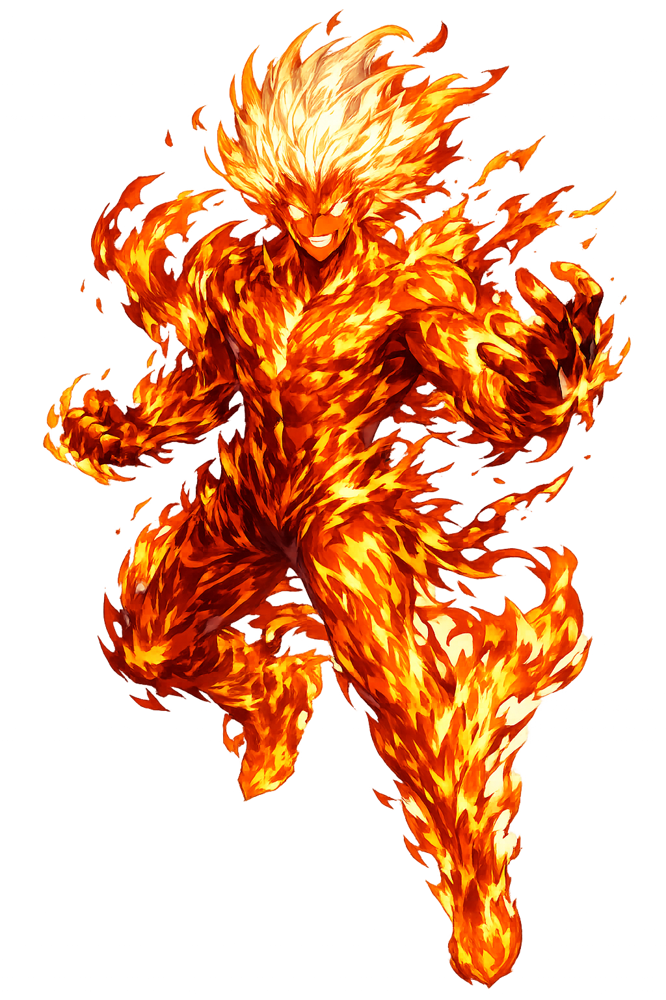

Ancient Domain
Pŷr is the Greek word for fire, an element that transforms, purifies, destroys, and illuminates. For Heraclitus it is the very substance of becoming; for cult it is the medium through which mortals communicate with gods.
Extended Lore
Etymology · Phonology · Orthography · Cultural Legacy · Primary Sources

Essential information about Pŷr, Fire
From original script to Unicode restoration
Pŷr is Tier 1 because the Greek πῦρ contains both length (υ) and stress (acute/circumflex) on the same syllable. It is one of the oldest and most culturally charged words in Greek.
Character-by-character philological analysis
| Character | Unicode | Name | Block | Phonetic Role |
|---|---|---|---|---|
| P | U+0050 | Latin Capital Letter P | Basic Latin | P uppercase |
| ŷ | U+0177 | Latin Small Letter Y with Circumflex | Latin Extended-A | Acute on y |
| r | U+0072 | Latin Small Letter R | Basic Latin | r same |
The Tier 1 classification reflects how much of the original phonology this restoration preserves — stress and vowel length for Greek names, distinctive letters and diacritics for every other tradition.
From ancient cult to modern Unicode
Pŷr is the Greek word for fire, an element that transforms, purifies, destroys, and illuminates. For Heraclitus it is the very substance of becoming; for cult it is the medium through which mortals communicate with gods.
Pŷr became one of the four Aristotelian elements and the Stoic active principle (pneuma/fire). In Christian symbolism it represented the Holy Spirit, judgment, and hellfire. Zoroastrianism elevated fire as the purest symbol of Ahura Mazda. The word survives in English through 'fire,' 'pyre,' and scientific terms like 'pyrotechnics' and 'pyroclastic.' Modern chemistry identifies fire as rapid oxidation, but the cultural symbolism remains ancient.
Pŷr is the element that made us human: cooking, metalworking, ceramics, glass, engines, electricity, and rockets all begin with controlled fire. It is also the element we most fear: conflagration, war, cremation, and climate change. The Greek word thus names both the origin of civilization and its potential end.
Restoring Pŷr in a domain name is more than orthographic accuracy. It is a statement that the internet should recognize the full range of human writing — not only the ASCII keyboard.
Common questions about Pŷr, Fire, and Unicode restoration
In reconstructed pronunciation, Pŷr is /pŷːr/ — approximately 'PYOOR' — one long, high-pitched syllable, like the sound of a flame catching..
Pŷr means Fire in the greek tradition.
Pŷr is associated with Flame (The visible, ever-moving form of fire itself), Hearth (hestia) (The sacred fire at the center of home and city), Torch (Carried fire, used in processions, war, and mystery rites), Phoenix pyre (The fire of self-renewal and transformation).
Plain ASCII pyr strips the stress, length, and script that make the name specific. Unicode restoration returns the name to its original written dignity.
Prometheus deceived Zeus over the division of sacrifice and then stole fire from heaven, hiding it in a fennel stalk to give to mortals. Zeus punished him with the torment of the Caucasus and sent Pandora as a counter-gift. Fire is thus the stolen technology that makes civilization possible.
The philological foundations of this restoration
Every claim on this page is grounded in established scholarship. The orthographic restorations follow disciplinary convention. The etymological chain follows the best available reference works. This is not invention — it is resurrection through scholarship.
You have traced the name from its earliest attestation to its Unicode restoration. Now return to the myth. The story is where the name lives.
Back to Lore